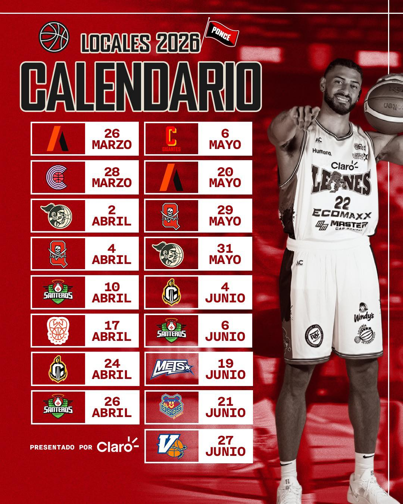
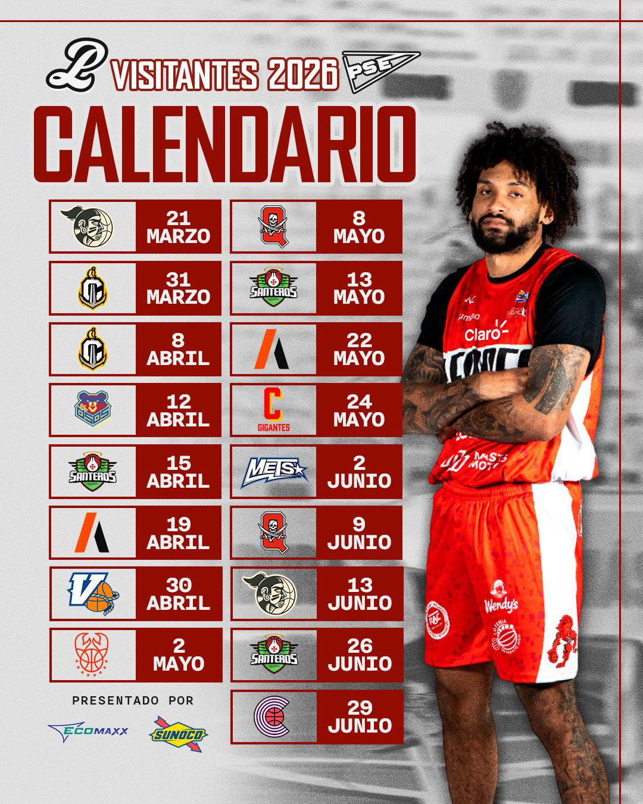

Sobre el Equipo
Los Leones de Ponce son uno de los equipos más exitosos del Baloncesto Superior Nacional (BSN) de Puerto Rico. Fueron fundados en 1946 y han ganado 14 campeonatos.
Sus colores son el negro, blanco y rojo. Juegan en el Auditorio Juan "Pachín" Vicéns en Ponce, Puerto Rico.
1946
Fundación
14
Campeonatos
8000
Capacidad
1000+
Victorias
Calendario 2026
Calendario de juegos de la temporada 2026:
Juegos locales

Juegos visitantes

Video
Video sobre la historia de los Leones de Ponce:
Si el video no carga, ábrelo en YouTube. (Al abrir el archivo local a veces YouTube no funciona; en la web publicada sí.)
Años de Campeonato
- 1952
- 1954
- 1955
- 1960
- 1964
- 1965
- 1966
- 1990
- 1992
- 1993
- 2002
- 2004
- 2014
- 2015